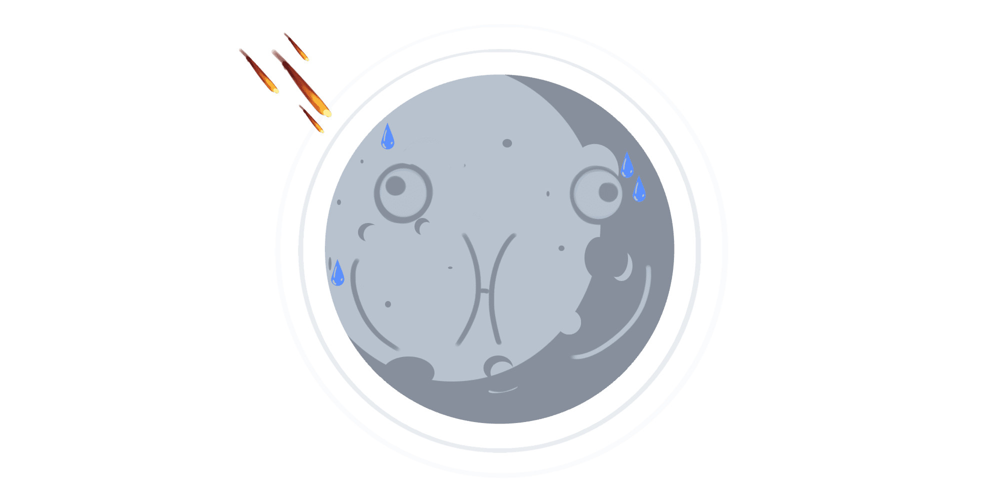

10 цікавих фактів про Місяць
Темна Сторона Місяця- це міф
Насправді обидві сторони Місяця бачать однакоу кількість сонячного світла, проье Землі видно
лише
одне обличчя Місяця. Це пояснюється тим, що Місяць обертається навколо своєї осі точно за
той самий час, який
потрібно для обертання навколо Землі, тобто одна і та ж сторона завжди
звернена до Землі. Сторона,звернена від
Землі, бачились лише юдськими ско з космічних кораблів.
Підйом і спад припливів відпливі на Землі
викликаєтьсяя Місяц
На Землі є дві опуклості внаслідок тядіння Місяця, викликаного гравітацією: одна зі сторони,
зверненої до Місяця, а інша з протилежної сторони, що зверненої до Місяця, а інша сторони, що звернена від
Місяця
Місяць віддаляється від Землі.
Місяць щороку віддаляється приблизно на 3,8 см від нашої планети. За оцінками, так буде
продовжуватись близько 50 мільярдів років. До того часу, як це станеться, Місяцю знадобиться
близько 47 днів для
обертання навколо Землі замість нинішніх 27,3 днів.
На Місяці людина важила б набагато менше.
Місяць має набагато слабкішу силу тяжіння, ніж Земля, через свою меншу масу, тому ви б важили
приблизно одну шосту (16,5%) вашої маси на Землі. Ось чому місячні астронавти могли стрибати і
підніматися так
високо в повітрі.
Місяць пройшли лише 12 людей; всі американські чоловіки.
Першою людиною, яка ступила на Місяць у 1969 році, був Ніл Армстронг у місії «Аполлон -11», тоді
як
останньою людиною, яка ступила на Місяць у 1972 році, був Джин Сернан у місії «Аполлон -17». З
тих пір Місяць
відвідують лише безпілотні апарати.

Місяць не має атмосфери.
Це означає, що поверхня Місяця незахищена від космічних променів, метеоритів і сонячних вітрів і
має
величезні коливання температури. Відсутність атмосфери означає, що на Місяці не чути жодного
звуку, а небо
завжди виглядає чорним.
Місяць має землетруси.
Вони викликані силою тяжіння Землі. Місячні астронавти використовували сейсмографи під час
відвідування Місяця і виявили, що невеликі місячні землетруси відбувалися за кілька кілометрів під
поверхнею,
викликаючи розриви та тріщини. Вчені вважають, що Місяць має розплавлене ядро, як і
Земля.
Першим космічним кораблем, що досяг Місяця, був Luna 1 у 1959 році.
Це був радянський корабель, який був запущений з СРСР. Вона пройшла в межах 5995 км від
поверхні
Місяця, перш ніж вийти на орбіту навколо Сонця.
Найближчим часом Місяць відвідає людина.
NASA планує повернути астронавтів на Місяць, щоб створити постійну космічну станцію. Людство
може
знову пройтись по Місяцю в 2019 році, якщо все піде за планом.
Протягом 1950 -х років США розглядали можливість детонації ядерної бомби на Місяці.
Секретний проект під час розпалу холодної війни був відомий як «Дослідження місячних
дослідницьких
польотів» або «Проект A119» і мав на увазі демонстрацію сили в той час, коли вони
відставали в космічній
гонці.

.png)